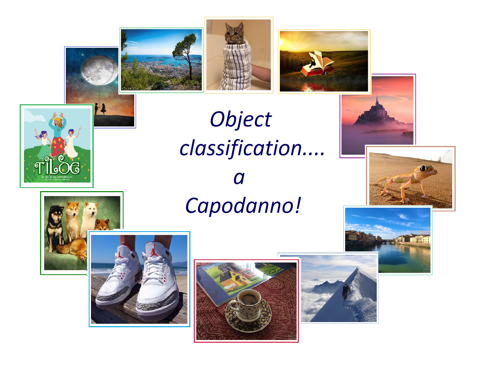
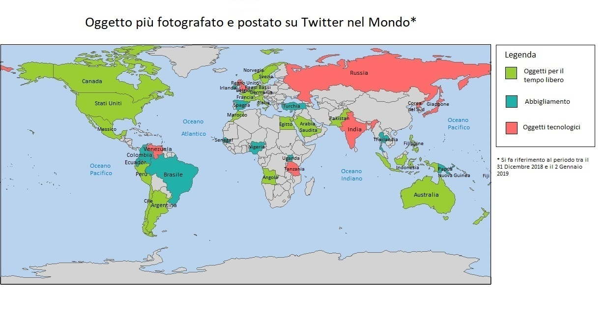

Vi siete mai chiesti quale sia l’oggetto più fotografato o l’immagine più postata sui social? E se il periodo di interesse fosse proprio quello di Capodanno?
Questo è esattamente il quesito che ci siamo poste in corrispondenza dell’avvento del nuovo anno, ma soprattutto è stata la curiosità che abbiamo voluto soddisfare in un momento di vacanza, spirito natalizio e spensieratezza.
Se anche voi siete curiosi, continuate a leggere questo blog per scoprirne di più!
Stuzzicate da quella che sembrava una scommessa tra amiche, abbiamo deciso di estendere il campo dell’indagine a 43 Paesi del mondo, selezionati in maniera casuale e omogenea dai diversi continenti, in base alla densità di popolazione, alla presenza di account Twitter attivi, ma soprattutto alla disponibilità di dati. In particolare:
- Africa: Angola, Egitto, Marocco, Nigeria, Senegal, Tanzania, Uganda.
- America: Argentina, Brasile, Canada, Cile, Colombia, Ecuador, Messico, Perù, Stati Uniti, Venezuela.
- Asia: Arabia Saudita, Corea del Nord, Filippine, Giappone, India, Indonesia, Pakistan, Russia, Thailandia.
- Europa: Belgio, Francia, Germania, Irlanda, Italia, Norvegia, Paesi Bassi, Regno Unito, Spagna, Svezia, Turchia.
- Oceania: Australia, Fiji, Indonesia, Nuova Zelanda, Papua Nuova Guinea, Samoa, Tonga.
Si sono poi utilizzate 1000 immagini in formato JPG per 42 paesi e solo 234 per la Russia, per assenza di dati. Tuttavia, per presentare un lavoro completo ed in linea con le scelte adottate finora, abbiamo ritenuto opportuno considerare anche quest’ultimo Paese, nonostante la ridotta numerosità delle osservazioni a disposizione. Questa scelta è stata rafforzata dalla volontà di scegliere un Paese rappresentativo e di ampie dimensioni nel continente asiatico, data la mancanza dei dati del Paese più popolato al mondo, vale a dire la Cina, a causa dell’adozione di una politica restrittiva, che censura la piattaforma social Twitter.
Le immagini in questione sono state postate da account Twitter (registrati in ognuno dei Paesi selezionati nell’analisi) tra il 31 Dicembre 2018 e il 2 Gennaio 2019 (considerando i diversi fusi orari) e vi è stato applicato un modello di object classification, capace di riconoscere l’oggetto presente nella foto o nell’immagine. In particolar modo il modello che si è deciso di utilizzare è stato quello delle reti neurali convoluzionali. L’algoritmo di deep learning utilizzato si è rilevato molto efficace e capace di attribuire elevata probabilità alla classificazione di oggetti in primo piano e con sfondo piuttosto nitido, di veicoli sportivi, di animali (specificandone addirittura la razza), ma anche di siti web, poster e locandine. Talvolta i risultati sono stati davvero bizzarri e divertenti, soprattutto quando il modello mal interpretava l’oggetto raffigurato. Si è riscontrato tale risultato in presenza di immagini poco definite, sfocate e soprattutto quando venivano rappresentati gruppi di persone. In questi casi infatti il modello fonda la classificazione dell’oggetto focalizzandosi sui contorni e dunque sulla forma assunta dalla massa.
In questo caso di studio si è deciso di utilizzare un modello pre-allenato per risolvere problemi legati all’aspetto computazionale. Il modello da noi scelto e implementato in Python è stato il Visual Geometry Group (VGG16), il quale è stato pre-allenato tramite il database di immagini di ImageNet, che ci ha permesso di classificare le foto con una vasta e dettagliata gamma di etichette. Per lo scopo dell’analisi si è deciso di aggregare queste ultime in classi più generiche, ma ugualmente rappresentative, in modo da facilitare anche l’interpretazione dei risultati. Si sono costruite 39 classi:
“Abbigliamento”,
“Accessori per i veicoli”,
“Accessori per la persona”,
“Aerei”,
“Alimenti”,
“Anfibi”,
“Animali estinti”,
“Animali marini”,
“Animali selvatici”,
“Aracnidi”,
“Architetture”,
“Armi”,
“Bevande”,
“Bovini”,
“Persone”,
“Cani”,
“Crostacei”,
“Edifici”,
“Fauna”,
“Gatti”,
“Imbarcazioni”,
“Insetti”,
“Molluschi”,
“Mustelidi”,
“Natura”,
“Oggetti da lavoro”,
“Oggetti per il sociale”,
“Oggetti della casa”,
“Oggetti per la cura della persona”,
“Oggetti tecnologici”,
“Oggetti per il tempo libero”,
“Ominidi e scimmie”,
“Parti del corpo”,
“Pesci”,
“Rettili”,
“Roditori”,
“Strumenti musicali”,
“Uccelli”,
“Veicoli”.
I risultati elaborati dal VGG16 hanno permesso di identificare un oggetto prevalente per ciascuno dei territori precedentemente elencati, come mostra la cartina sottostante, senza tralasciare però una percentuale di errore nella classificazione. Per valutare l’accuratezza e la validità di questo progetto, si è realizzato dunque un test a mano basato su un campione casuale di 1163 immagini. La proporzione di immagini correttamente classificate sul totale considerato è stata del 41%.
È immediato percepire che le classi predominanti nel panorama mondiale sono tre, vale a dire “Oggetti per il tempo libero”, “Abbigliamento” e “Oggetti tecnologici”, rappresentati rispettivamente da verde, blu petrolio e rosso corallo, come descritto dalla legenda. Questi risultati sono stati ottenuti considerando solo le etichette con una probabilità associata maggiore di 0.3, per assicurarci dei risultati più robusti.

In particolare, risulta evidente come zone limitrofe siano spesso caratterizzate dalla stessa colorazione, permettendoci di individuare anche dei gruppi di nazioni rappresentate dalla stessa classe modale. Dai risultati ermegono differenze culturali tra i diversi continenti, ad eccezione del Sud-America e dell’Africa. Questo aspetto potrebbe essere spiegato dall’ipotesi di numerosi re-tweet della stessa foto, dato il breve arco temporale considerato. Aspetto che è stato in seguito riscontrato dalle foto da noi analizzate, come per esempio nell’America Settentrionale.Di seguito vengono proposti i risultati ottenuti:
- Oggetti per il tempo libero: Stati Uniti, Canada, Perù, Cile, Argentina, Messico, Marocco, Egitto, Arabia Saudita, Angola, Pakistan, Francia, Belgio, Paesi Bassi, Germania, Norvegia, Svezia, Australia, Filippine, Nuova Zelanda, Samoa, Fiji, Italia, Indonesia.
- Abbigliamento: Brasile, Ecuador, Colombia, Senegal, Nigeria, Uganda, Turchia, Spagna, Papua Nuova Guinea, Thailandia, Tonga, Irlanda.
- Oggetti tecnologici: Regno Unito, Venezuela, Russia, Tanzania, India, Corea del Nord, Giappone.
Nonostante i risultati ottenuti non siano particolarmente eterogenei, abbiamo ritenuto questo progetto ugualmente interessante al fine di soddisfare una nostra personale curiosità nel periodo di Capodanno. Questo lavoro può inoltre essere esteso ad un progetto di brand detection per permettere a grandi aziende e multinazionali di verificare l’impatto delle vendite dei propri prodotti sui consumatori che utilizzano le piattaforme social. Nel nostro caso, si tratta dunque di dare uno spunto per possibili progetti futuri di più ampie vedute.